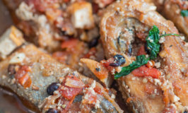
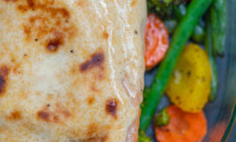
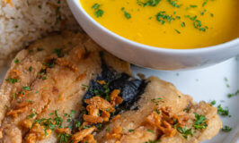
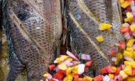

Tochong Bangus Recipe
Surrounded by bodies of water from all four corners, it shouldn’t come as a surprise to anyone that we Filipinos really know what we’re doing with ...
Read onCreamy Baked Salmon
Many delicious meals have been served piping hot and straight from the oven. Baking trays and pans are incredibly popular cookware, and this is even ... Read on
Crispy Garlic Bangus and Cream of Pumpkin Soup
Crispy Garlic Bangus has always been a favorite in my household. Touted as the Philippines' national fish, milkfish, or bangus as we more commonly ...
Read onPinaputok na Tilapia Recipe
Among the best parts of Filipino cuisine is how it rarely shies away from incorporating a great and wild variety of ingredients into its dishes. In ...
Read on